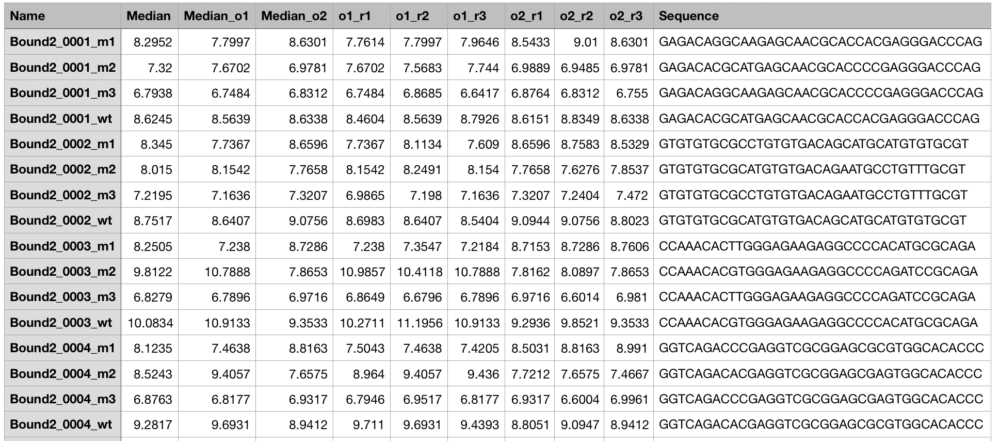

Pipeline¶
Getting data to train¶
This framework does cooperativity modeling on the gcPBM data.
Example of a gcPBM data from Myc:
Where each data has its corresponding negative control:
First, import our framework which is located in the src folder:
import sys
sys.path.insert(0, 'src')
from teacup import probeparser
from teacup import classifier
from teacup import utils
from teacup import sitesfinder
To start the analysis, we make an object from our data and its negative control:
>>> infile = "data/dataset/all_Myc_Mad_2nd_myc_log_bound2.txt"
>>> negctrlfile = "data/dataset/all_Myc_Mad_2nd_myc_log_negctrl.txt"
>>> probes = probeparser.ProbeParser(infile,negctrlfile)
To classify the probes on each orientation:
>>> pvalthres = .05
>>> classification = classifier.classify_per_orientation(probes,pvalthres)
Wilcox greater test orientation 1, # cooperative rows with p-val less than 0.050: 527/2059
Wilcox less test orientation 1, # steric rows with p-val less than 0.050: 41/2059
Wilcox greater test orientation 2, # cooperative rows with p-val less than 0.050: 548/2059
Wilcox less test orientation 2, # steric rows with p-val less than 0.050: 36/2059
Number of overlap coop: 151
Number of overlap steric: 0
Number of overlap additive: 255
This returns a dictionary of label to the list of index. The function labels by running Mann–Whitney U test on the permutation of the orientation. It outputs the counts of the hypothesis testing as well as the number of overlapping label between orientation 1 and orientation 2.
We can also get the count by running:
>>> utils.print_dictlist_count(classification)
Count of coop_o1: 527
Count of steric_o1: 41
Count of additive_o1: 698
Count of coop_o2: 548
Count of steric_o2: 36
Count of additive_o2: 642
Count of coop_overlap: 151
Count of steric_overlap: 0
Count of additive_overlap: 255
Save classification to file:
>>> utils.dictlist2file(classification,"classification_per_orientation.txt")
And read it again:
>>> classification = utils.read_dictlist_file("classification_per_orientation.txt")
To make plots from the classification variable:
ax = classifier.plot_median_binding_sum(probes,classification,0,log=True,plotname="plot_overlap")
ax_o1 = classifier.plot_median_binding_sum(probes,classification,1,log=True,plotname="plot_o1")
ax_o2 = classifier.plot_median_binding_sum(probes,classification,2,log=True,plotname="plot_o2")
For example, for the orientation 1, the plot result is:
And orientation 2:
The next question is: among all orientations, how do we determine whether a probe is cooperative, additive, or steric? This needs to take into account the classification of a probe in both orientations. For example, if a probe is cooperative in both orientations the we can just label it as cooperative. However, if the label is different between orientations then we need to decide. The algorithm can be seen in classifier.classify_orientation_combined.
To run the function and get the count:
>>> classification_combined = classifier.classify_orientation_combined(probes,pvalthres)
Pass cutoff in both 861
WARN: O2 is cooperative but o1 is steric for probe 32
WARN: O2 is cooperative but o1 is steric for probe 55
WARN: O1 is cooperative but o2 is steric for probe 77
.
.
Cooperative but steric count: 22
Rows that don't satisfy constraint 428
>>> utils.print_dictlist_count(classification_combined)
Count of cooperative: 902
Count of additive: 652
Count of steric: 55
Count of coop_steric: 22
The count of coop_steric tells us that there are probes that are cooperative in one orientation and steric in the other. However, this should not happen. To see what happens, we can check a few probes that are cooperative and steric by first getting the index. One way to easily see this is by printing the indexes to a file:
>>> utils.dictlist2file(classification_combined,"classification_both_orientations.txt")
From the file, one of the row that is coop_steric is row 1115. We can see how the distribution from all replicas looks like by runnning:
>>> probes.scatter_boxplot_row(1115)
The output is:
It seems that steric happens in the orientation 1 and cooperative in the orientation 2. To get what happens with more detail, we can query the specificity of both binding sites using iMADS web server:
From the image above, we can see that the first binding site is stronger than the second. That’s why m2_o1 is really strong1. But what is happened with m2_o2? This is most likely because the effect of the glass slide. Below is a depiction of this:
{kind=link}
The glass slide on the microarray really reduces the binding to the point that the first binding site becomes really weak. When both of the binding sites are weaker however, is when cooperative binding happens. The full mechanism on how to take this effect into the model is still unclear.
Therefore, we decide to use probes that are clearly cooperative (cooperative in both orientations) and clearly additive (additive in both orientations). We do not have probes that are steric in both sites thus, we start by modeling cooperative vs additive.
It is also important to note that with this, we leave the classification we made in classifier.classify_orientation_combined(probes,pvalthres) for the time being.
Visualizing and filtering the training data¶
To make the training data, first we need to be able to figure the binding sites from any wild type row in the probe files. To do this, we will use SitesFinder class which utilizes pwm and escore to find the binding site.
To initialize SitesFinder:
>>> pwmpath = "data/pwm/MYC-MAX_8mers_pwm.txt"
>>> escorepath = "data/escore/MYC-MAX_8mers_11111111.txt"
>>> sf = sitesfinder.SitesFinder(pwmpath,escorepath,pwm_startidx=8,pwm_endidx=15)
Using this class, we can see the binding sites and the place where mutations were made. For example, to get binding sites of all the clearly cooperative probes:
>>> classification = utils.read_dictlist_file("classification_per_orientation.txt")
>>> sfplot = sf.lineplot_pwm_escore(probes,indexes=classification["coop_overlap"],start_pwm_offset=1,end_pwm_offset=1,bottom_cutoff=-10)
To make filter and make the training data:
>>>sf.filtertrain_to_csv(probes,classification,filename="training.csv")
Number filtered cooperative 113
Number filtered additive 199
Making features from training data¶
Initialize:
trainingpath = "data/generated/training.csv"
train = trainingparser.TrainingParser(trainingpath)
Boxplot from distance:
train.scatter_boxplot_col("distance")
Output:
Filter training data¶
Getting only sequence of specific distances:
# first make training parser from everything
train = trainingparser.TrainingParser(trainingpath,motiflen=6)
train.compare_distance_features(iter=100, fpr_lim=20)
# then we make a data frame with only the distance that we want
t2 = train.training.loc[train.training['distance'] == 11]
# make training parser with the new data frame, it accepts both path
# and data frame
train2 = trainingparser.TrainingParser(t2,motiflen=6)
# then write the sequences of that distance into a file
train2.get_seq_aligned(tofile=True)